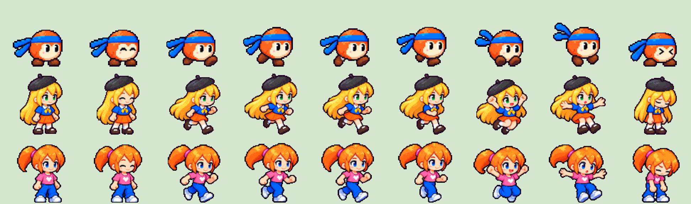

ตัวละครตาม concept — เพิ่มความละเอียด
ใช้ท่าวิ่งเดิม 4 เฟรมและสัดส่วนเดิม · ภาพละเอียดขึ้น 2 เท่าต่อด้าน
Bobo ไม่มีปาก · Mew ตาเขียว · Aclaire ตาฟ้า
ขยาย 4 เท่าจากเฟรมที่เกมใช้จริง เพื่อดูการเปลี่ยนท่า ขนาดบนสนามขึ้นกับจอและการซูมของเกม
ครบ 9 ท่าต่อตัว
